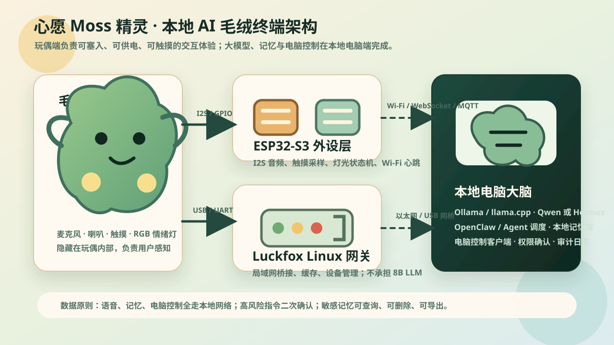
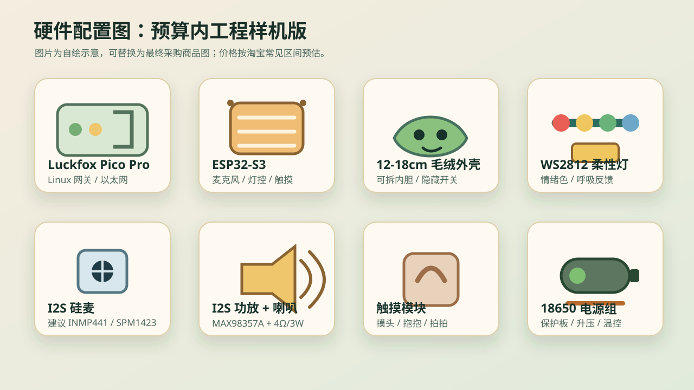
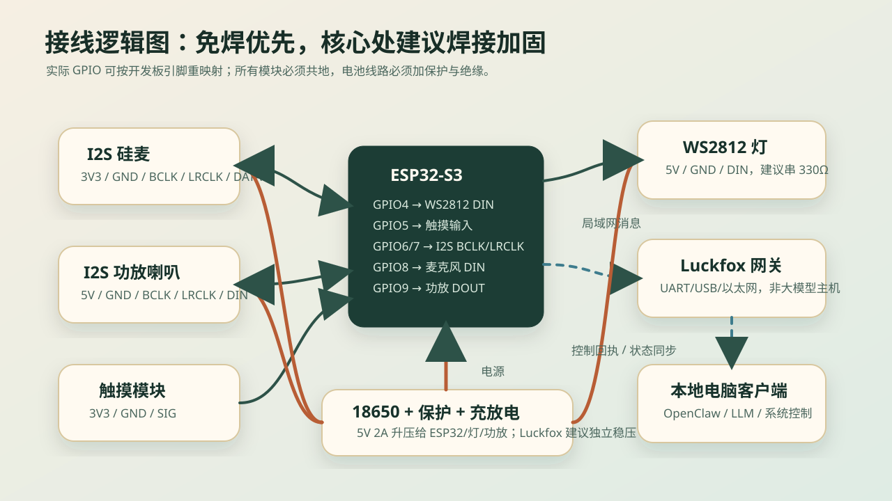

产品说明书 v1.1 · 本地优先
心愿 Moss 精灵
一只可以手拿、可以摸头、会听你说话、会用灯光表达情绪、能记住心愿并控制电脑的本地 AI 毛绒终端。 玩偶负责“陪伴感”和真实交互，本地电脑负责大模型、长期记忆、智能体调度和电脑控制。
基础版 450-650 元
增强版 700-900 元
语音与记忆默认本地
中文陪伴优先
局域网控制电脑
12-18cm 毛绒可装配
产品定位
这不是普通语音玩具，而是把本地 AI 能力做成“可触摸终端”的私人陪伴设备。
工作原理
用户感觉是在和玩偶互动，实际由三层系统协同完成：玩偶交互、边缘控制、本地电脑大脑。

毛绒交互终端
安装在玩偶内部，负责收音、播音、触摸反馈、灯光状态和电量提示。
边缘控制层
ESP32-S3 负责外设控制；Luckfox Pico Pro 作为可选网关，承担局域网桥接、缓存和调试。
本地电脑大脑
运行大模型、记忆库、心愿系统、语音识别/合成和电脑控制客户端。
硬件组成
这里列的是本次产品真正需要的硬件，不再堆不必要配置。先做基础版，跑通后再加 Luckfox 网关。

| 模块 | 推荐关键词/型号 | 作用 | 预估价格 |
|---|---|---|---|
| Linux 小板 | Luckfox Pico Pro RV1106 | 可选增强件。用于局域网桥接、设备管理、缓存和调试服务；不是必买项。 | 约 260-330 元 |
| 外设主控 | ESP32-S3 N16R8 Type-C 开发板 | 控制麦克风、触摸、灯光、Wi-Fi 消息和低功耗状态。 | 约 59-89 元 |
| 灯光 | WS2812B 柔性灯带 / 环形灯 | 情绪颜色、呼吸灯、唤醒状态、错误提示。 | 约 20-35 元 |
| 音频输入 | INMP441 I2S 硅麦 | 语音采集，后续可双麦降噪。 | 约 8-18 元 |
| 音频输出 | MAX98357A + 4Ω 3W 腔体喇叭 | 播放 AI 回复和提示音。 | 约 25-45 元 |
| 触摸 | TTP223 电容触摸模块 | 摸头、轻拍、抱抱等拟人交互。 | 约 5-20 元 |
| 电源 | 18650 + 保护板 + 充放电模块 | 移动供电，必须做绝缘、保护和固定。 | 约 30-60 元 |
| 外壳 | 12-18cm 可拆内胆毛绒玩偶 | 隐藏硬件。若想音质、续航和装配更稳，18cm 比 12cm 更友好。 | 约 60-150 元 |
配置建议
第一版建议先买 ESP32-S3、麦克风、功放喇叭、灯带、触摸、电源和毛绒外壳，预算约 450-650 元。Luckfox 网关等核心体验跑通后再加，总价仍可控制在 1000 元以内。
装配与接线
先桌面联调，再装入毛绒；电源和发热位置要留维护空间。

桌面联调
使用杜邦线把 ESP32-S3、INMP441、MAX98357A、WS2812 和触摸模块接起来，先验证灯效、触摸、音频和通讯协议。
毛绒装配
电源线、灯带线、喇叭线建议焊接并用热缩管保护。电池独立固定，主板外加绝缘层，充电口隐藏但可维护。
AI 技术
模型选择以中文陪伴、响应速度、工具调用和本地运行稳定性为优先。
推荐模型
中文陪伴和工具调用优先选 Qwen3 4B/8B 或 Qwen2.5 7B Instruct 量化版。喜欢 Hermes 风格时，可切换 Hermes 3 8B GGUF。
运行方式
普通电脑用 Ollama 最省事；追求性能和可控性用 llama.cpp；Apple Silicon 可考虑 MLX。
语音识别
优先 Whisper.cpp 或 faster-whisper 在电脑端离线识别。玩偶端只负责采集音频，减少 ESP32-S3 负担。
语音合成
第一版可用 Piper 或 Edge TTS 缓存音色。后续再升级 CosyVoice / GPT-SoVITS 做专属可爱音色。
| 场景 | 首选 | 替代 | 说明 |
|---|---|---|---|
| 中文聊天与陪伴 | Qwen3 4B/8B Q4 | Qwen2.5 7B Instruct Q4 | 中文理解好，工具调用能力也适合智能体。 |
| 角色扮演与 Agent | Hermes 3 8B GGUF | Llama 3.1 8B Instruct | 适合构建“有性格”的 Moss 精灵，但中文优先时 Qwen 更稳。 |
| 低配置电脑 | Qwen3 1.7B / 4B | Phi / Gemma 小模型 | 牺牲一点聪明度，换更快响应。 |
| 智能体调度 | OpenClaw | LangGraph / 自研状态机 | 用适配层隔离，避免被单一框架锁死。 |
功能说明
这些是本次产品说明书里的核心功能，优先服务“陪伴、记忆、电脑控制、心愿成长”。
AI 自然聊天
支持中文闲聊、情绪安抚、日常提醒和轻量知识问答。断网时仍可通过本地电脑模型工作。
长期记忆
保存名字、偏好、秘密、心愿、常用软件和互动记录，支持搜索、编辑、删除和导出。
情绪变色
开心为暖黄，思考为青绿，困惑为蓝白，拒绝为橙红，低电量为慢红闪。
触摸互动
摸头触发问候或撒娇，长按进入安静模式，连续轻拍触发“我在”的陪伴反馈。
心愿种子
把用户的心愿保存为种子，按行动进度成长为发芽、长叶、开花和完成状态。
电脑控制
打开软件、调音量、播放暂停、打开网页、搜索、截图、快捷键、输入文字；危险操作二次确认。
使用流程
产品使用时不需要理解技术细节，用户只要像和桌面小伙伴说话一样交互。
心愿种子逻辑
这是 Moss 精灵的特色系统：把目标变成会成长的陪伴对象，而不是冷冰冰的待办事项。
01
种下心愿
用户说“我想学会画画”，Moss 精灵生成心愿卡，询问原因和第一步。
02
记录行动
每次用户完成练习、打开软件、上传作品，种子获得成长值。
03
情绪反馈
成长时灯光更明亮，语音反馈更开心；停滞时温柔提醒，不做焦虑压迫。
04
开花归档
心愿完成后生成成长记录，进入本地记忆花园。
{
"wish_id": "wish_001",
"title": "学会画一只 Moss 精灵",
"stage": "sprout",
"energy": 42,
"next_action": "今晚画 20 分钟草图",
"memory_links": ["第一次说想画画", "喜欢青绿色"]
}
安全与权限
电脑控制默认保守开启，高风险动作必须经过确认，保证可玩也可控。
| 等级 | 可执行能力 | 确认方式 | 示例 |
|---|---|---|---|
| L0 | 只聊天，不控制电脑 | 无需确认 | 陪聊、解释、记录心愿 |
| L1 | 安全控制 | 默认允许，可随时关闭 | 调音量、播放暂停、打开网页 |
| L2 | 编辑控制 | 首次授权 + 可撤销 | 输入文字、快捷键、打开应用 |
| L3 | 高风险控制 | 语音复述或电脑弹窗二次确认 | 关机、删除文件、发送消息、付款相关 |
实施建议
建议按样机节奏推进：先证明体验，再追求外观完整和长期稳定。
阶段一 · 电脑端原型
电脑端跑通本地模型、记忆库、心愿种子和 5 个安全电脑控制指令。
阶段二 · 裸板联调
ESP32-S3 跑通灯光、触摸、录音、播放和 WebSocket/MQTT 通讯。
阶段三 · 毛绒集成
把电池、喇叭、麦克风、灯带和主板安全塞入玩偶，完成固定、绝缘和维护口。
阶段四 · 展示样机
连续演示 30 分钟，完成聊天、记忆召回、心愿成长、电脑控制和危险指令拒绝。
体验指标
这些指标用于判断产品样机是否达到“可以稳定展示和日常试用”的水平。
语音唤醒
安静环境下唤醒成功率 ≥ 90%，误触发率可接受，并支持手动静音。
响应速度
普通问答 3-8 秒内回复，灯光状态切换延迟低于 200ms。
稳定运行
连续运行 30 分钟不重启、不过热、不掉线。
记忆可控
记忆支持保存、搜索、删除、导出，敏感记录可单独加密。
控制可审计
电脑控制指令有日志，L3 高风险操作必须二次确认。
外观完整
硬件不明显外露，开关和充电口隐藏但方便维护。
维护与扩展
Moss 精灵需要像一台小设备一样维护：能更新、能备份、能停用权限，也能替换模型。
记忆维护
提供“查看记忆、删除记忆、导出记忆、清空设备”的本地管理入口，避免长期使用后不可控。
权限维护
电脑控制令牌可撤销；L2/L3 权限默认关闭，只有用户主动开启后才允许执行。
模型扩展
模型与 Agent 通过适配层连接，后续可在 Qwen、Hermes、OpenClaw 或自研 Agent 之间切换。